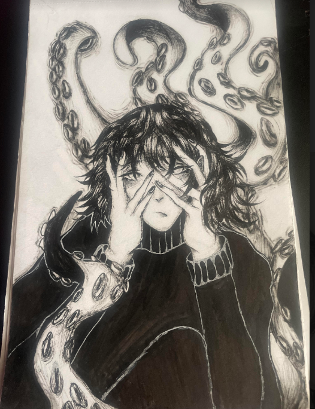
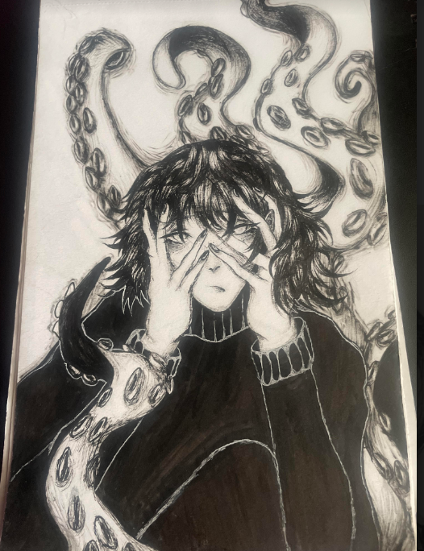

My name is Nyah Aguilera, and I am a student at Seminole State College that is earning a degree in Digital Media. Art is a big passion of mine, and it is something that I have surrounded myself with growing up. My artwork has been in multiple art events over time, and it is something I would like to continue to pursue. My goal is to have a career in animation, and it would be a dream to work on big films. I am known to be a hard worker and a good team leader, as well as someone that has a very efficient work ethic. I have experience with different mediums, such as painting, digital art, traditional art, and sculpting.
 
